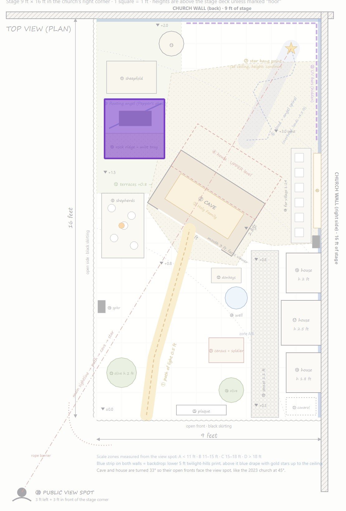
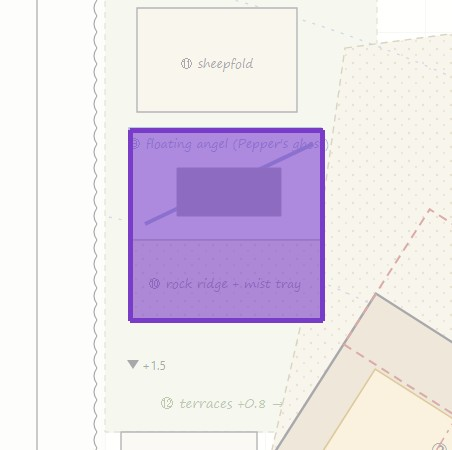

9 floating angel (Pepper's ghost), 10 rock ridge with mist tray


| Item | Qty | Prop-only | Lean | Full |
|---|---|---|---|---|
| Clear acrylic 3 mm, 2.4 × 2 ft sheet | 1 | 2,000 | 2,000 | 3,000 |
| Screen: reuse an old tablet, or 10–13 in monitor + Pi Zero 2 W | 1 | 0 | 0 | 7,000 |
| Black cloth, plywood housing, black paint | lot | 800 | 800 | 1,200 |
| Ultrasonic mister discs ×2 + tray + 5 V fan + float | 1 set | 1,500 | 1,500 | 2,200 |
| Ridge: thermocol + PoP + paint | 1 sheet | 2,700 | 2,700 | 3,200 |
| Total for this block | 7,000 | 7,000 | 16,600 | |
Tools: Jigsaw, black cloth, hot glue, tablet or monitor, spirit level